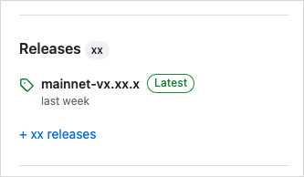

Install Sui
The quickest way to install Sui is using the binaries delivered with every release. If you require more control over the install process, you can install from source. To take advantage of containerization, you can utilize the Docker images in the docker folder of the sui repository.
Supported operating systems
Sui supports the following operating systems:
- Linux - Ubuntu version 22.04 (Jammy Jellyfish) or later
- The
sui-nodebinary from AWS supports only version 22.04
- The
- macOS - macOS Monterey or later
- Microsoft Windows - Windows 10 and 11
Quick install using Homebrew or Chocolatey
Use one of the following commands for Homebrew (MacOS, Linux, or Windows Subsystem for Linux) or Chocolatey (Windows) to install Sui.
- Homebrew
- Chocolatey
$ brew install sui
$ choco install sui
Find more versions of Sui for Windows on the Chocolatey community website.
If you use this method to install Sui, you are all set. The quick install is suitable for most use cases. The remaining installation methods are for those wanting more control over the installation process.
Download binaries from GitHub
Each Sui release provides a set of binaries for several operating systems. You can download these binaries from GitHub and use them to install Sui.
- Linux
- macOS
- Windows
-
In the right pane, find the Releases section.

-
Click the release tagged Latest to open the release's page.
-
In the Assets section of the release, select the .tgz compressed file that corresponds to your operating system.
-
Extract all files from the .tgz file into the preferred location on your system. These instructions assume you extract the files into a
suifolder at the user root of your system for demonstration purposes. Replace references to this location in subsequent steps if you choose a different directory. -
Navigate to the expanded folder. You should have the following extracted files:
Name Description move-analyzerLanguage Server Protocol implementation. suiMain Sui binary. sui-bridgeSui native bridge. sui-data-ingestionCapture Full node data for indexer to store in a database. sui-faucetLocal faucet to mint coins on local network. sui-graphql-rpcGraphQL service for Sui RPC. sui-nodeRun a local node. sui-test-validatorRun test validators on a local network for development. sui-toolProvides utilities for Sui. -
Add the folder containing the extracted files to your
PATHvariable. To do so, you can update your~/.bashrcto include the location of the Sui binaries. If using the suggested location, you typeexport PATH=$PATH:~/suiand press Enter. -
Start a new terminal session or type
source ~/.bashrcto load the newPATHvalue.
-
In the right pane, find the Releases section.
-
Click the release tagged Latest to open the release's page.
-
In the Assets section of the release, select the .tgz compressed file that corresponds to your operating system.
-
Extract all files from the .tgz file into the preferred location on your system. These instructions assume you extract the files into a
suifolder at the user root of your system. Replace references to this location in subsequent steps if you choose a different directory. -
Navigate to the expanded folder. You should have the following extracted files:
Name Description move-analyzerLanguage Server Protocol implementation. suiMain Sui binary. sui-bridgeSui native bridge. sui-data-ingestionCapture Full node data for indexer to store in a database. sui-faucetLocal faucet to mint coins on local network. sui-graphql-rpcGraphQL service for Sui RPC. sui-nodeRun a local node. sui-test-validatorRun test validators on a local network for development. sui-toolProvides utilities for Sui. -
Add the folder containing the extracted files to your
PATHvariable. To do so, you can update your~/.zshrcor~/.bashrcto include the location of the Sui binaries. If using the suggested location, you typeexport PATH=$PATH:~/suiand press Enter. -
Start a new terminal session or type
source ~/.zshrc(or.bashrc) to load the newPATHvalue. -
If running the binaries for the first time, you might receive an error from MacOS that prevents the binaries from running. If you receive this error, close the dialog and type
xattr -d com.apple.quarantine ~/sui/*in your terminal and press Enter (be sure to adjust the path if different).
-
In the right pane, find the Releases section.
-
Click the release tagged Latest to open the release's page.
-
In the Assets section of the release, select the .tgz compressed file that corresponds to your operating system.
-
Extract all files from the .tgz file into the preferred location on your system. These instructions assume you extract the files into a
suifolder at the root of your C drive. Replace references to this location in subsequent steps if you choose a different directory.infoWindows does not natively support .tgz files, but you can use a free compressed file app like 7Zip to extract.
-
Navigate to the expanded folder. You should have the following extracted files:
Name Description move-analyzerLanguage Server Protocol implementation. suiMain Sui binary. sui-bridgeSui native bridge. sui-data-ingestionCapture Full node data for indexer to store in a database. sui-faucetLocal faucet to mint coins on local network. sui-graphql-rpcGraphQL service for Sui RPC. sui-nodeRun a local node. sui-test-validatorRun test validators on a local network for development. sui-toolProvides utilities for Sui. -
Add the folder containing the extracted files to your
PATHvariable. There are several ways to get to the setting depending on your version of Windows. One way that works on all versions of Windows is to typesysdm.cplin a console to open the System Properties window. Under the Advanced tab, click the Environment Variables... button. -
In the Environment Variables window, select the
Pathvariable and click the Edit... button. -
In the Edit environment variable window, click New and add the path to your expanded folder. Using the example path, this would be
C:\sui. -
Click OK.
Running binaries other than sui might require installing prerequisites itemized in the following section.
Confirm the installation
To confirm that Sui installed correctly, type sui --version in your console or terminal and press Enter. The response should provide the Sui version installed. If the console or terminal responds with a command not found error, make sure the full path to your Sui binaries is included in your PATH variable.
Install from Cargo
Run the following command to install Sui binaries from the testnet branch:
$ cargo install --locked --git https://github.com/MystenLabs/sui.git --branch testnet sui --features tracing
Enabling the tracing feature is important as it adds Move test coverage and debugger support in the Sui CLI. Without it these two features will not be able to be used.
The install process can take a while to complete. You can monitor installation progress in the terminal. If you encounter an error, make sure to install the latest version of all prerequisites and then try the command again.
To update to the latest stable version of Rust:
$ rustup update stable
The command installs Sui components in the ~/.cargo/bin folder.
Upgrade from Cargo
If you previously installed the Sui binaries, you can update them to the most recent release with the same command you used to install them (changing testnet to the desired branch):
$ cargo install --locked --git https://github.com/MystenLabs/sui.git --branch testnet sui --features tracing
The tracing feature is important as it adds Move test coverage and debugger support in the Sui CLI. Unless it is enabled you will not be able to use these two features.
Install sui-node for Ubuntu from AWS
The sui-node binaries for Ubuntu 22.04 are available for download from AWS. You can use either the commit sha or version tag in the URL to retrieve the specific version of Sui you want. Use one of these values to construct the AWS download URL.
The URL is in the form https://sui-releases.s3-accelerate.amazonaws.com/<SHA-OR-TAG>/sui-node, where you replace <SHA-OR-TAG> with the proper value. For example, the URL is https://sui-releases.s3-accelerate.amazonaws.com/00544a588bb71c395d49d91f756e8bfe96067eca/sui-node to download the release with the relevant commit sha. If you visit the URL using a browser, the binary downloads automatically.
After downloading, open a console to the file's location and change its permission to 755.
$ chmod 755 sui-node
Add the file's location to your PATH variable if it's directory is not already included. Follow the steps in Sui Full Node Configuration to complete the setup.
Build from source
Follow the instructions in this topic to install the Rust crates (packages) required to interact with Sui networks, including the Sui CLI.
To install Sui from source, you first need to install its prerequisites for your operating system. After installing the supporting technologies, you can install Sui binaries from source.
You can also download the source code to have local access to files.
Prerequisites
Your system needs the following prerequisites available to successfully install Sui.
Rust and Cargo
Sui requires Rust and Cargo (Rust's package manager) on all supported operating systems. The suggested method to install Rust is with rustup using cURL.
Some other commands in the installation instructions also require cURL to run. If you can't run the cURL command to install Rust, see the instructions to install cURL for your operating system in the following section before you install Rust.
Use the following command to install Rust and Cargo on macOS or Linux:
$ curl --proto '=https' --tlsv1.2 -sSf https://sh.rustup.rs | sh
If you use Windows 11, see information about using the Rust installer on the Rust website. The installer checks for C++ build tools and prompts you to install them if necessary. Select the option that best defines your environment and follow the instructions in the install wizard.
For additional installation options, see Install Rust.
Sui uses the latest version of Cargo to build and manage dependencies. See the Cargo installation page on the Rust website for more information.
Use the following command to update Rust with rustup:
$ rustup update stable
Additional prerequisites by operating system
Select the appropriate tab to view the requirements for your system.
- Linux
- macOS
- Windows
The prerequisites needed for the Linux operating system include:
- cURL
- Rust and Cargo
- Git CLI
- CMake
- GCC
- libssl-dev
- libclang-dev
- libpq-dev (optional)
- build-essential
The Linux instructions assume a distribution that uses the APT package manager. You might need to adjust the instructions to use other package managers.
Install the prerequisites listed in this section. Use the following command to update apt-get:
$ sudo apt-get update
All Linux prerequisites
Reference the relevant sections that follow to install each prerequisite individually, or run the following to install them all at once:
$ sudo apt-get install curl git-all cmake gcc libssl-dev pkg-config libclang-dev libpq-dev build-essential
cURL
Install cURL with the following command:
$ sudo apt-get install curl
Verify that cURL installed correctly with the following command:
$ curl --version
Git CLI
Run the following command to install Git, including the Git CLI:
$ sudo apt-get install git-all
For more information, see Install Git on Linux on the GitHub website.
CMake
Use the following command to install CMake.
$ sudo apt-get install cmake
To customize the installation, see Installing CMake on the CMake website.
GCC
Use the following command to install the GNU Compiler Collection, gcc:
$ sudo apt-get install gcc
libssl-dev
Use the following command to install libssl-dev:
$ sudo apt-get install libssl-dev
If the version of Linux you use doesn't support libssl-dev, find an equivalent package for it on the ROS Index.
(Optional) If you have OpenSSL you might also need to also install pkg-config:
$ sudo apt-get install pkg-config
libclang-dev
Use the following command to install libclang-dev:
$ sudo apt-get install libclang-dev
If the version of Linux you use doesn't support libclang-dev, find an equivalent package for it on the ROS Index.
libpq-dev (optional)
You need libpq-dev only if you plan to use the --with-indexer and --with-graphql options with sui start. See Local Network for more information.
Use the following command to install libpq-dev:
$ sudo apt-get install libpq-dev
If the version of Linux you use doesn't support libpq-dev, find an equivalent package for it on the ROS Index.
build-essential
Use the following command to install build-essential:
$ sudo apt-get install build-essential
The prerequisites needed for the macOS operating system include:
- Rust and Cargo
- Homebrew
- cURL
- CMake
- libpq (optional)
- Git CLI
- PostgreSQL
macOS includes a version of cURL you can use to install Homebrew. Use Homebrew to install other tools, including a newer version of cURL.
Homebrew
Use the following command to install Homebrew:
$ /bin/bash -c "$(curl -fsSL https://raw.githubusercontent.com/Homebrew/install/HEAD/install.sh)"
If you used the commands in the Install using Homebrew section, you do not need to install anything else.
All macOS prerequisites
With Homebrew installed, you can install individual prerequisites from the following sections or install them all at once with this command:
$ brew install curl cmake libpq git
cURL
Use the following command to update the default cURL on macOS:
$ brew install curl
CMake
Use the following command to install CMake:
$ brew install cmake
To customize the installation, see Installing CMake on the CMake website.
libpq (optional)
You need libpq-dev only if you plan to use the --with-indexer and --with-graphql options with sui start. See Local Network for more information.
Use the following command to install libpq:
$ brew install libpq
Git CLI
Use the following command to install Git:
$ brew install git
After installing Git, download and install the Git command line interface.
PostgreSQL
Visit the official PostgreSQL website for instructions on downloading PostgreSQL.
The prerequisites needed for the Windows 11 operating system include:
- cURL
- Rust and Cargo
- Git CLI
- CMake
- C++ build tools
- LLVM compiler
cURL
Windows 11 ships with a Microsoft version of cURL already installed. If you want to use the curl project version instead, download and install it from https://curl.se/windows/.
Git CLI
Download and install the Git command line interface.
CMake
Download and install CMake from the CMake website.
Protocol Buffers
Download Protocol Buffers (protoc-xx.x-win32.zip or protoc-xx.x-win64.zip) and add the \bin directory to your Windows PATH environment variable.
Additional tools for Windows
Sui requires the following additional tools on computers running Windows.
- For Windows on ARM64 only - Visual Studio 2022 Preview.
- C++ build tools is required to install Rust.
- The LLVM Compiler Infrastructure. Look for a file with a name similar to LLVM-15.0.7-win64.exe for 64-bit Windows, or LLVM-15.0.7-win32.exe for 32-bit Windows.
Known issue - The sui console command does not work in PowerShell.
Using Sui from command line
With Sui installed, you can interact with Sui networks using the Sui CLI. For more details, see the Sui CLI reference.
Installing Sui developer tools
If you use VSCode, you can install the Move extension to get language server support for Move, as well as support for building, testing, and debugging Move code within the IDE.
You can install the extension either by searching the fully-qualified extension name, Mysten.move, in the extension view, or by pressing Ctrl-P or Cmd-P and typing ext install mysten.move.
Installing the Move extension also installs the appropriate move-analyzer binary for your operating system, as well as the Move Trace Debugger extension, and Move Syntax extension.
There are also community Move packages for Emacs, Vim, and Zed.
Next steps
Now that you have Sui installed, it's time to start developing. Check out the following topics to start working with Sui:
- Read about the Sui CLI, the most straightforward way to start exploring Sui networks.
- Learn about the available networks and connect to one.
- Get some coins on a development network.
- Build your first dApp to start your on-chain journey.